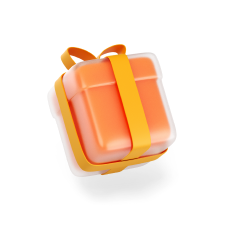

<app-navbar [type]="'DASHBOARD'"></app-navbar>
<app-search-input (onFilter)="filterList($event)"></app-search-input>
<app-navigator
  [title]="'Liste desideri'"
  [image]="'../../assets/images/arrow_right.svg'"
  [routerLink]="['/', 'giftlist']"
></app-navigator>
<ng-container *ngIf="giftlists$ | async; let giftlistList; else: loading">
  <div class="giftlist-container">
    <ng-container
      *ngFor="
        let giftlist of giftlistList;
        trackBy: trackByFnGiftlist;
        let i = index
      "
    >
      <a
        [routerLink]="['/giftlist', giftlist.id]"
        class="no-decoration"
        *ngIf="applyFilter(giftlist)"
      >
        <app-giftlist-card
          [giftlist]="giftlist"
          [classIndex]="i"
        ></app-giftlist-card>
      </a>
    </ng-container>
    <ng-container *ngIf="giftlistList.length === 0">
      <div class="d-flex flex-column mb-4">
        
        <p>
          Sembra che tu non abbia ancora nessuna lista di desideri... perchè non
          ne crei una subito?
        </p>
        <button class="button button-primary" (click)="createList()">Crea la tua prima lista</button>
      </div>
    </ng-container>
  </div>
</ng-container>
<app-navigator
  [title]="'Ultime attività'"
  [image]="'../../assets/images/arrow_right.svg'"
  [routerLink]="['/', 'activity']"
></app-navigator>
<ng-container *ngIf="activities$ | async; let activityList; else: loading">
  <div class="activity-container">
    <ng-container
      *ngFor="
        let act of activityList;
        trackBy: trackByFnActivities;
        let i = index
      "
    >
      <app-activity-card [activity]="act" [classIndex]="i"></app-activity-card>
    </ng-container>
  </div>
</ng-container>
<ng-template #loading>Loading...</ng-template>
